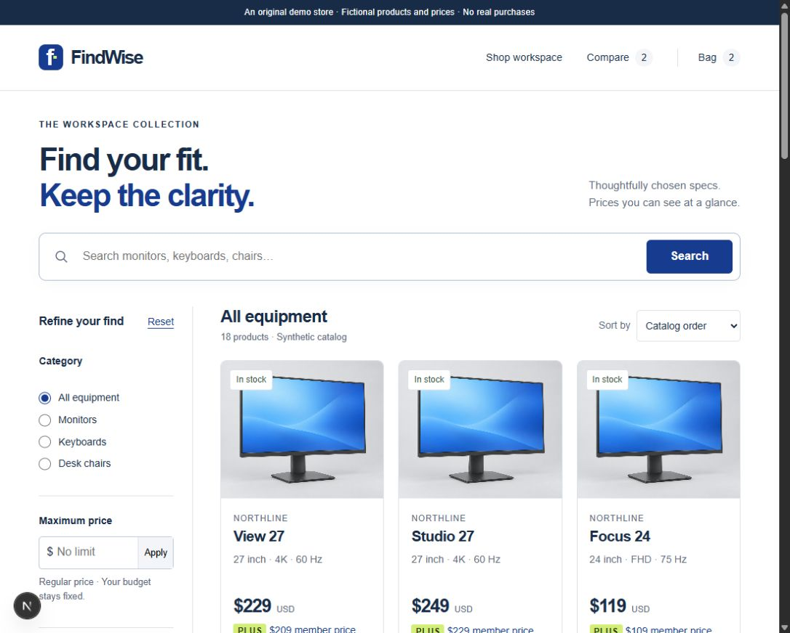
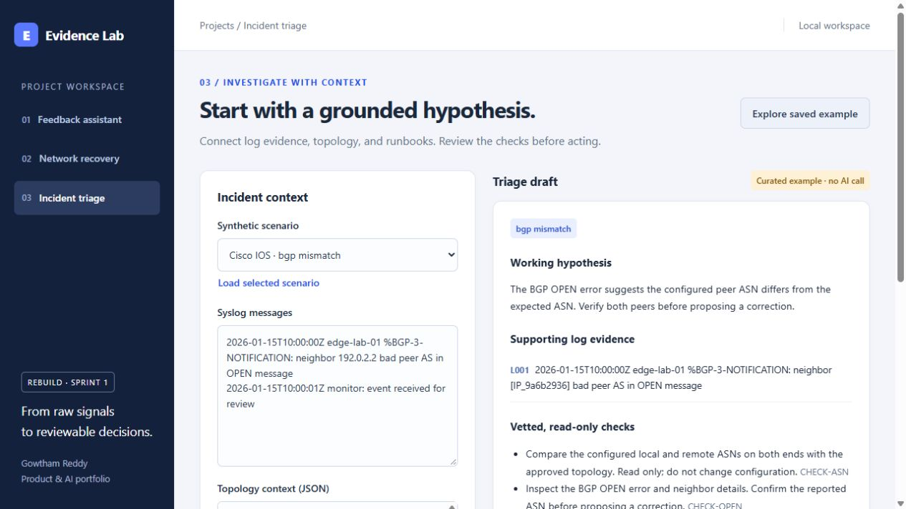

February 2024 – Present
Sr. Full Stack Developer
HashTek Inc.
Work on healthcare onboarding, SQL analysis, requirements, and regression and release automation, with cross-functional delivery.
Hi, I’m Gowtham.
Part-time · Maximum 20 hours/weekAvailable from January 2027
I’m a software engineer with a background in .NET development and business analytics. I’m interested in building AI systems and studying how they behave—where they succeed, where they fail, and how to make them more dependable.
Experience at HashTek Inc. · Capgemini01 / Projects
Working recommendation, commerce, and applied-AI projects, with demos and documented evaluation.

A movie recommendation lab with a locally trained model, editable taste profiles, and a measured comparison against popular picks.
View case study
A home-office storefront with explicit budget and specification filters, product comparison, and persistent carts backed by an ASP.NET Core API.
View case study
Three working projects in one workspace: source-linked feedback analysis, incident triage, and approval-gated recovery in a simulated network lab.
View case study
A working code-review lab with static and live AI reviewers, exact changed-line evidence, persistent history, and human-approved comment drafts. Its evaluation preserves false positives and unsupported reasoning.
View case studyBuild, evaluate, document, then move to the next.
Research companion: Incident Triage Behavior Study
02 / Research
I want to build AI systems and study their behavior. My intended doctoral focus is applied artificial intelligence, with particular interest in evidence-supported recommendations, failure analysis, and human review.
Doctoral applications in progress.
My current recommendation experiment compares personalization with popularity and examines what changes when a profile contains only a few ratings.
Explore the measured findings03 / About
My background brings together software engineering and business analytics. I’ve worked on enterprise .NET features at Capgemini and healthcare onboarding workflows at HashTek, alongside SQL analysis and release automation. I want to build on that experience through applied AI: developing useful systems, examining their failure cases, and learning how to make their behavior more dependable.
February 2024 – Present
HashTek Inc.
Work on healthcare onboarding, SQL analysis, requirements, and regression and release automation, with cross-functional delivery.
May 2021 – April 2022
Capgemini
Delivered enterprise .NET features, improved SQL queries and indexes, and supported release automation, stakeholder demos, and acceptance reviews.
December 2023
University of North Texas
July 2020
Vellore Institute of Technology
04 / Contact
Seeking internships and research assistant roles.
Available from January 2027
Part-time · Maximum 20 hours/week